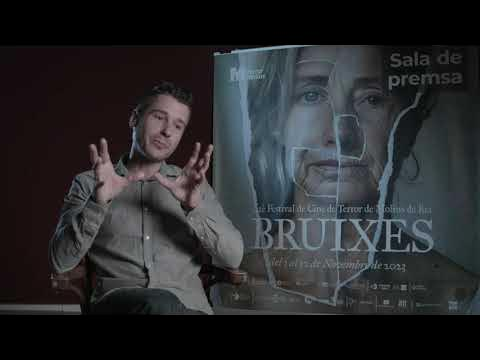
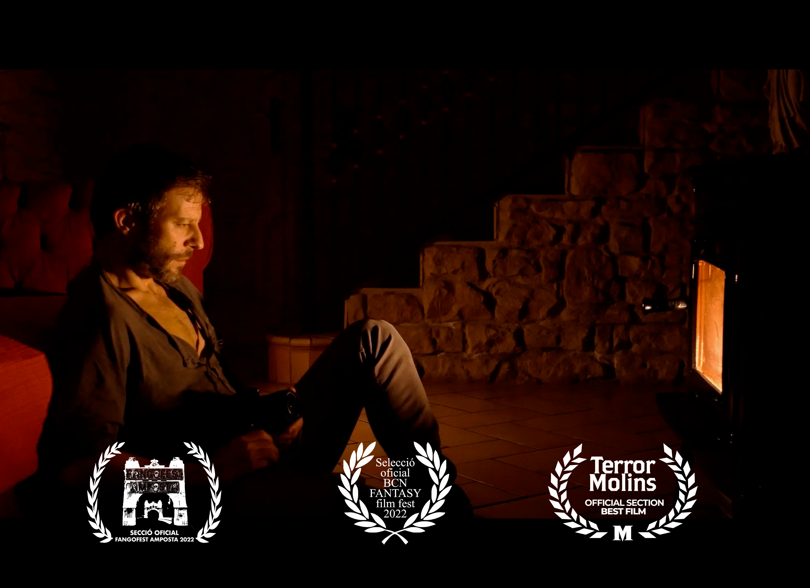
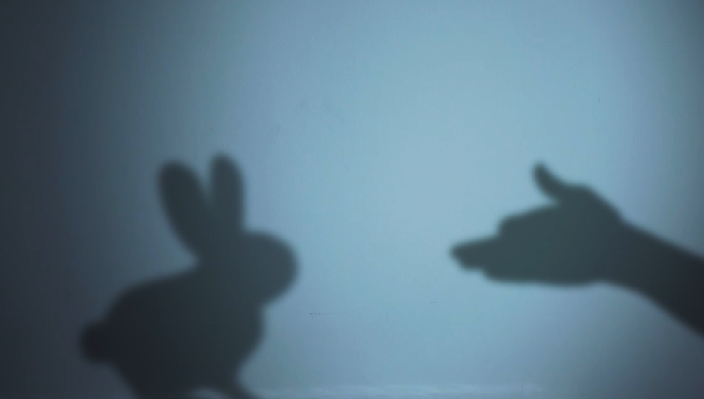
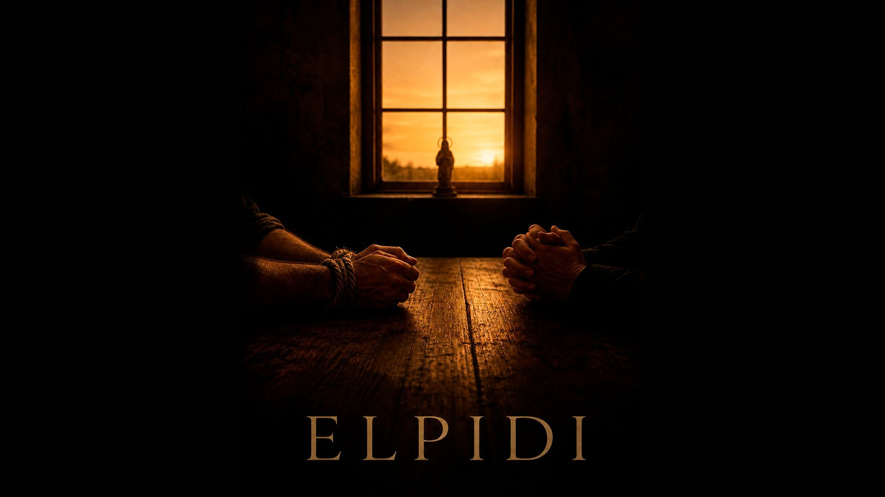
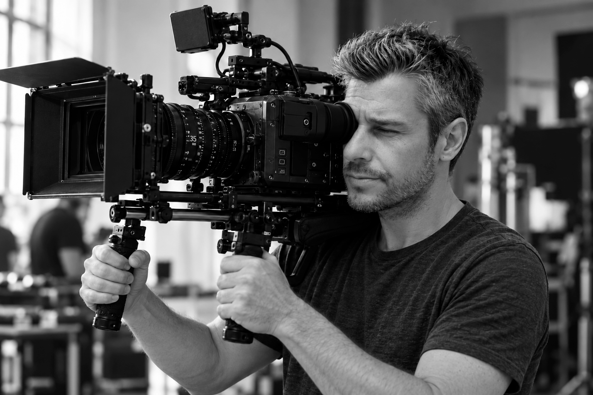

En reproduir-la, es carrega el vídeo de YouTube.
Entrevista · TerrorMolins
Parlem de La Fotografia.
Una conversa amb Roger Cadavieco al Festival de Cine de Terror de Molins de Rei.
Guionista · Director · Muntador
PortfoliFicció de gènere.
Explora els projectesFinalista
Festival de Terror de Molins de Rei
Atmosfera, tensió i narrativa de gènere.
Un curtmetratge de ficció rodat amb equip mínim.
Una conversa sobre el curt

En reproduir-la, es carrega el vídeo de YouTube.
Entrevista · TerrorMolins
Una conversa amb Roger Cadavieco al Festival de Cine de Terror de Molins de Rei.
On hi ha llum, hi ha ombres.
Un curt de terror rodat durant el confinament de la pandèmia.
Veure el curt a YouTube (s'obre en una pestanya nova)
Veure Sombras chinasCurtmetratge fantàstic en català
Dos personatges.
Una casa.
Totes les tardes.
Quan en Joan visita el seu pare, aquest el reté a casa sense donar-li explicacions. Però el vell sembla anticipar tot el que passa.
Un thriller domèstic sobre fe, culpa i el vincle entre un pare i un fill.

